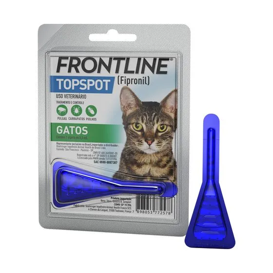

Antipulgas e Carrapatos Frontline TopSpot para Gatos
R$ 65,00
Ver descrição do produto
Frontline TopSpot é um antipulgas e carrapatos de uso tópico desenvolvido para gatos, oferecendo proteção eficaz contra pulgas e carrapatos e contribuindo para a saúde e o bem-estar do animal.
- Indicação:
- gatos
- Categoria:
- antipulgas e carrapatos
- Animal:
- gatos
- Proteção:
- contra pulgas e carrapatos
- Apresentação:
- solução pour-on (uso tópico)